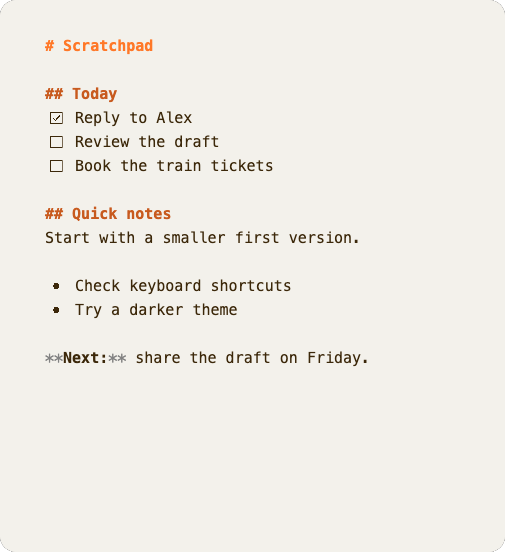

01. CAPTURE
Create a scratchpad.
Press ⌘N on macOS or Ctrl+N on Windows and Linux. Each scratchpad gives you a fresh page for notes, lists, or tasks.
⌘ / Ctrl+NNew scratchpad
A desktop scratchpad for quick notes
Quick notes, tasks, and ideas.
Open a scratchpad and start
typing.
Write in Markdown. Save locally. Keep working offline.
Connect to SilverBullet when you want to sync.
For macOS, Windows & Linux · In development

01 / Simple by design
No workspace to set up.
Create a scratchpad and start typing.
Press ⌘N on macOS or Ctrl+N on Windows and Linux. Each scratchpad gives you a fresh page for notes, lists, or tasks.
Your edits save locally as you type. Keep writing without a connection and return to your notes later.
Connect your SilverBullet server to sync scratchpads into
Quick Notes/ and search your existing pages.
02 / Themes & paper
Choose a light, dark, or colorful theme. Change the paper style and text size independently.
These are screenshots rendered by Bulletnotes itself, with the same sample note. Select a theme or paper style to compare.
See all themes & customization



03 / Optional SilverBullet sync
Use Bulletnotes for local scratchpads, then connect your SilverBullet space when you’re ready.
Add your server address and token in Settings. Scratchpads sync to
Quick Notes/ when your server is available. You can
also search and open pages from your space.
Development status
Bulletnotes is in active development.
Build from source or
check GitHub for development builds.
No published builds yet. Development builds, when available, are not production releases.